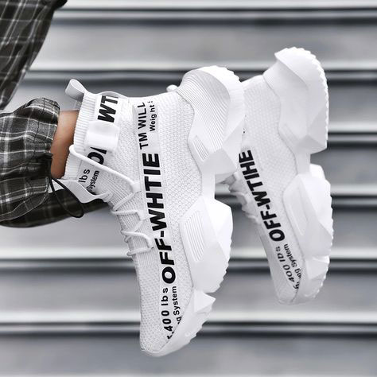

Limited edition sneakers and ‘hypebeast’ brand collaborations
Collaboration trainers are the source of much of the resell industry’s value. Many of these trainers are hyped for months, and when they finally drop, they’re sold out in minutes. That’s where the boggling sneaker resale market comes in, bringing with it a huge jump in price. Sites like Goat and StockX bridge the gap between customers hungry to purchase streetwear fashion trends – also known as “hypebeasts” – and the scarcity of these styles. Collaboration trainers can make prices spike up by a couple hundred dollars, or by a thousand … or even more.

The beauty of sneakers
The days when sneakers – also known as trainers – were an accessory we actually used to exercise in feels like a distant memory, one relegated to the era of Nokia phones and fax machines. Because while men have been showing off sparkling white sneakers for decades, it is only very recently that women have associated Stan Smiths and battered Reeboks with high fashion.

The role of women
In an era where women are re-evaluating their roles in society and demanding a desexualisation of the workplace, sneakers also feel alluringly gender neutral. Nobody is suggesting that wearing high heels is an unfeminist choice, but expectations that women should dress in a certain way to appeal to men are changing, and as a result, most women prioritise comfort above all else.

Best 2019 footwear
Two of 2019’s hottest collaborators were front and center, making their respective ways into the headlines one final time. Travis Scott showed off a brand-new patchwork Nike SB Dunk that may very well be a Cactus Jack collaboration in his Jackboys crew’s new video. Meanwhile, the ever-polymathic Virgil Abloh gave us a look at his first new Air Jordan 1 since the middle of 2018, letting Instagram skate sensation burberry.erry shred in a vivid “Canary Yellow” style.